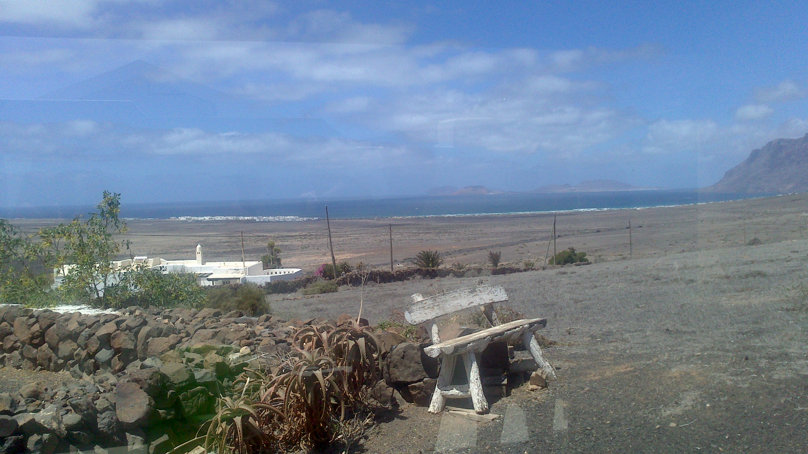
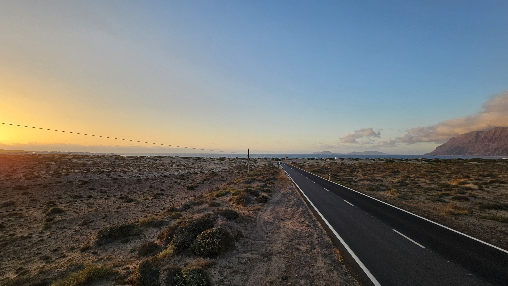

Bienvenid@ a Famara
Comienza tu ruta

Bienvenid@ a Famara
Comienza tu ruta

Bienvenid@ a Famara
Comienza tu ruta
Sobre La Caleta de Famara
Bienvenido/a a la Ruta Digital de Caleta de Famara
Comienza tu recorrido y descubre la historia, los paisajes y la esencia de Caleta de Famara.

Caleta de Famara conserva una estrecha relación entre paisaje, patrimonio y formas de vida tradicionales. Esta ruta digital autoguiada propone un recorrido por algunos de sus elementos más representativos, permitiendo descubrir cómo la interacción entre el océano, el Risco de Famara y el Jable ha configurado un territorio con una identidad propia
Te animamos a descubrir Famara con calma, observando los detalles del paisaje y disfrutando de una experiencia que combina naturaleza, patrimonio e historia local.
- Explora el recorrido siguiendo el orden propuesto para comprender mejor la evolución del paisaje y del asentamiento.
- Observa la relación entre el entorno natural y las actividades tradicionales desarrolladas por la población local.
- Respeta los espacios naturales, el patrimonio cultural y la tranquilidad del núcleo poblacional.
- Utiliza la información interpretativa de cada parada para identificar elementos del paisaje, la arquitectura y la historia local.
- Disfruta del recorrido con atención al entorno, ya que muchos de sus valores patrimoniales se encuentran integrados en el paisaje cotidiano.
Famara - Short story about Lanzarote, Caleta de Famara by Davide Corona
Ruta autoguiada de La Caleta de Famara
Sabías que...
Además de los lugares que podrás descubrir durante el recorrido, existen otros elementos naturales, históricos y culturales que ayudan a comprender mejor la identidad de Caleta de Famara. En esta sección encontrarás contenidos complementarios sobre el territorio, su biodiversidad, sus tradiciones y las personas que han formado parte de su historia
10. Flora: vida en un entorno extremo
Provident nihil minus qui consequatur non omnis maiores. Eos accusantium minus dolores iure perferendis tempore et consequatur.
11. Fauna: un refugio de biodiversidad
Ut autem aut autem non a. Sint sint sit facilis nam iusto sint. Libero corrupti neque eum hic non ut nesciunt dolorem.
12. Espacios naturales protegidos
Parque Natural del Archipiélago Chinijo
Red Natura 2000
ZEC Archipiélago Chinijo
ZEPA Islotes del Norte de Lanzarote y Famara
13. Las Galerías de Famara: buscando agua en el macizo
Non et temporibus minus omnis sed dolor esse consequatur. Cupiditate sed error ea fuga sit provident adipisci neque.
14. Procesión marítima del Sagrado Corazón de María
Cumque et suscipit saepe. Est maiores autem enim facilis ut aut ipsam corporis aut. Sed animi at autem alias eius labore.
Dolori Architecto
Hic molestias ea quibusdam eos. Fugiat enim doloremque aut neque non et debitis iure. Corrupti recusandae ducimus enim.
Galería de imágenes
Viaja al pasado de Famara mediante una selección de fotografías que muestran su historia y su gente
- Imágenes históricas
- App
- Card
- Web
Las imágenes incluidas en esta galería están protegidas por derechos de autor; queda prohibida su reproducción, distribución o difusión sin la autorización expresa de sus titulares.


Contacto
Dirección
Famara
Llámanos
+34 697 601 906
Maria.martel121@alu.ulpgc.es